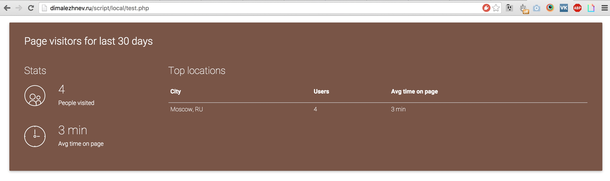
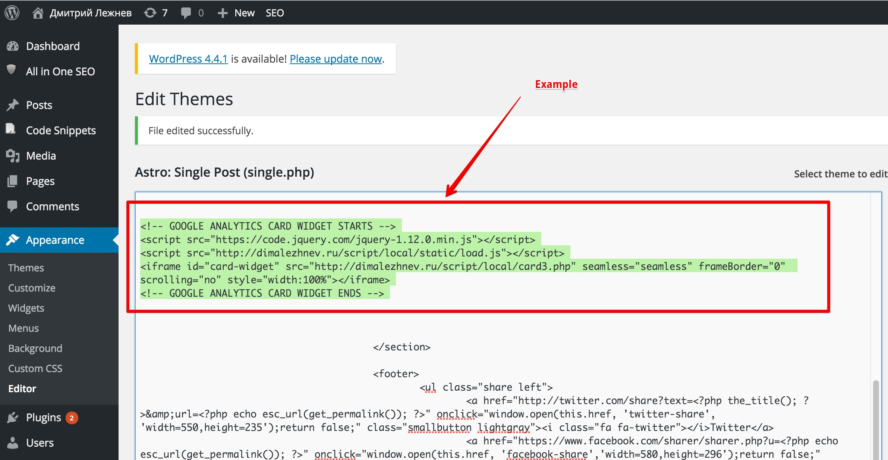
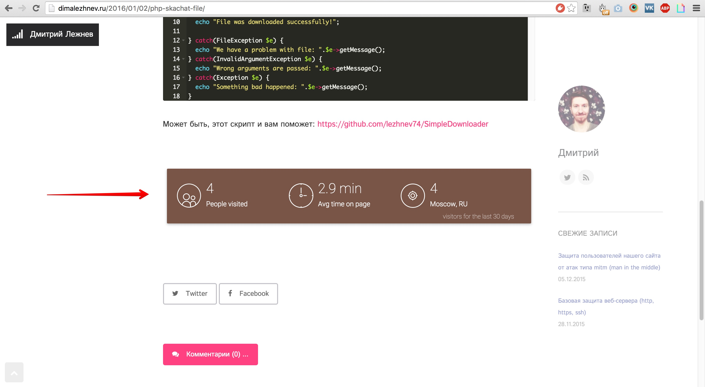

Created: 12/01/2016
By: Dmitriy Lezhnev
Email: lezhnev.work@gmail.com
Thank you for purchasing my widget. If you have any questions that are beyond the scope of this help file, please feel free to email via my user page contact form here. Thanks so much!
The wigdet contains of few folders:
"Local" folder contains customizable files and configuration, while "src" and "vendor" contains code and are not for editing or modification (unless you know what you are doing).
Local folderInside local folder there are few files and subfolders:
"Cache" is used by the widget for storing temporary files. "Views" folder contains files that contorls how widget is rendered on your page - you can change them only if you have skills in HTML (it uses BLADE template engine). "Static" folder contains JS and CSS files for your widget. Local folder should be publicly accessible from the internet in order to work (see INstallation section for more details).
To use this script you will need:
You will need to create a google so-called "service" in order to access you Google Analyitcs data from widget. It is easy. Just follow this steps:
That's it. We created a service. Now let's go to your Google Analytics Account:
Now our service has access to our Google Analytics account. THis is what we need to make widget work!
3. Configure the widgetIn order to configure the script to the following:
You should get something like this:
<?php
return [
// Email of your service to work with Google Analytics API
// Create service: https://console.developers.google.com/flows/enableapi?apiid=analytics&credential=client_key
"SERVICE_EMAIL" => "somename@analyticsrealtimeapi.iam.gserviceaccount.com",
"ACCESS_FILE" => "AnalyticsRealTimeApi-b2c62fF30cd.p12",
// your Google Analytics Tracking ID (of your website)
"TRACKING_ID" => "UA-59731439-21",
// Period for stats show
// 90 means show analytics for last 90 days
"TRACKING_PERIOD_DAYS" => 90,
// color of the card
// choose from http://materializecss.com/color.html
// Example: "deep-orange darken-1"
"material_color" => "amber darken-3",
];
4. Upload the widget to your server
Now upload all the widget files to some folder on your server. This folder should be accessible from the internet.
For example, let's say I uploaded widget to the "script" subfolder on my website (dimalezhnev.ru).
When it's done you need to test that everything is okay. Open the "test.php" file from your browser. In my case I will open URL: "http://dimalezhnev.ru/script/local/test.php"
You should see your widget right on your page:
 5. Alright! Now edit your website template and add this lines of code to the place where you want to see your widget:Replace "<URL>" with your website URL
<!-- GOOGLE ANALYTICS CARD WIDGET STARTS --> <script src="https://code.jquery.com/jquery-1.12.0.min.js"></script> <script src="/script/local/static/load.js"></script> <iframe id="card-widget" src=" /script/local/card3.php" seamless="seamless" frameBorder="0" scrolling="no" style="width:100%"></iframe> <!-- GOOGLE ANALYTICS CARD WIDGET ENDS -->
You can change widget type by changing "card3.php" to "card1.php" or "card2.php".
You should get something like this:
Now, when I open my website I can see my banner here:
I've used the following images, icons or other files as listed.
Once again, thank you so much for purchasing this script. As I said at the beginning, I'd be glad to help you if you have any questions relating to this script. No guarantees, but I'll do my best to assist. If you have a more general question relating to the scripts on CodeCanyon, you might consider visiting the forums and asking your question in the "Item Discussion" section.
Dmitriy Lezhnev